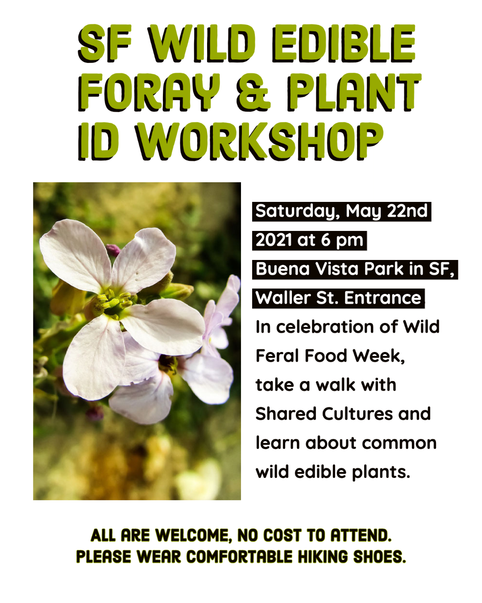

7th annual Wild/Feral Food Week
Wild/Feral Food Week, 21–29 May, 2021, promotes “harvesting the whole farm” and re-incorporating pandigenous ancestral foods into our diets to reduce food waste, promote biodiversity on farms and in our diets, and delight palates across the globe.
Please support these restaurants, bars, distilleries, breweries, farms, foragers, and food producers!
Savage Kitchen (Wailuku, Hawaii, USA)
Join Sunny Savage for a free class on harvesting & processing haole koa (Leucaena leucocephala). We will be learning to identify, harvest various parts for food, learn processing techniques, and of course some delicious samples of prepared foods made with haole koa.
When: May 23rd, 11am-3pm
Register: email support@savagekitchen.com for location and event details
TEALEAVES (Vancouver, BC, Canada)
Food, Culture, and Biodiversity | TEALEAVES Presents the In Good Taste Documentary Launch
In celebration of UNESCO’s World Day for Cultural Diversity on May 21st and World Biodiversity Day on May 22nd, join the public launch of the In Good Taste Documentary at the World Biodiversity Forum. With themes ranging from mouthfeel to regenerative agriculture, indigenous food knowledge, and biodiverse diets, ‘In Good Taste’ reveals solutions to save our planet and our personal health. Changing human behavior is a matter of deliciousness or desirability: How can we mobilize for positive impact through personal taste?
What: documentary film When: Friday, May 21, 9:00 am PST. Register: Zoom Webinar

Very Edible Gardens (Coburg, Victoria, Australia)
Come for a relaxing and edible walk in the park as we check out various autumn edible & medicinal wild weedy plants available in Melbourne, Victoria.
What: wild edible and medicinal plant identification walks
When: 22 May at 10:30am and 1:30pm.
Cost: $AUD25/$20 concession.
Register: see www.eatthatweed.com for more details and other dates.

The Ecology Center (San Juan Capistrano, CA, USA)
Chef Ryan Peterson will offer Friday Night Farm Dinner, featuring nettle pizza and garden lettuce salad with foraged greens.
What: pizza for two dinner farm dinner with wild greens
When: Friday 28 May
Reservations: online
Cost: $50 for two
More: Weekly Farm Share Harvest Box of organic fruit, vegetables, & herbs from our farm and farm partners
Cost: starts at $25
Orchard Kitchen (Whidbey Island, WA, USA)
Chef Vincent Nattress uses the wild bounty of Whidbey Island and Puget Sound. For Wild/Feral Food Week, expect foraged sea beans, spruce tips, nori, wakame, chickweed, and nettles, in addition to produce from the Orchard Kitchen’s own farm.
Farmstand produce and CSA boxes also available.
Reservations: online
Marie Viljoen (New York, NY USA)
Accompany wild foods author and forager Marie Viljoen on a mid-spring stroll through the NY Botanical Gardens Garden to identify a host of edible flowers and plants and discover their culinary and mixology potential. Marie will emphasize what is sustainable to forage, what is not, and why. She will cover how to forage sustainably using ramps as a case study, as well as how to grow vulnerable native edibles at home. Outside only; rain or shine.
What: wild food identification walks
When: Thursday, 27 May, 11am-2pm EDT
Registration: online
Morchella Wild Foods (San Francisco Bay Area, USA)
This San Francisco foraging company supplies over 200 species of plants and fungi, largely to fine dining establishments.
What: foraged ingredients
Inver Restaurant (Argyll, Scotland, UK)
Walking to work in rural Inver Restaurant is like browsing a fresh produce market- except everything is free for the taking! This time of year the menu is full of wild garlic and wild leeks, tender shoreline seaweeds like pepper dulse, and spring’s early edible flowers like ladies’ smock (cuckoo flower). But for WFFW For Wild & Feral Food Week 2021 we’ll be serving the whole garden on our evening tasting menu. Expect snacks to start like “seedlings and seeds”- self-seeded amaranth and brassica seedlings, served with a pumpkin seed miso “bagna cauda” dip (basically we’ve helped gardener Kate make money from weeding!). Spring’s tender, richly mineral nettles feature with the lamb course, and last year’s shooting and flowering kale plants are pruned and served with a buckwheat and broccoli tart and a savoury custard made with local farmhouse cheese. Even the rhubarb meringue is garnished with the primroses that grow in the hedgerows bordering the garden.
Reservations: online
Oakland Spirits Company (OsCo) (Oakland, California, USA)
Oakland Spirits Company (OsCo) is a craft and specialty spirits company located in uptown Oakland. Many of their spirits feature foraged ingredients including nori, sage, and bay leaf.
For Wild/Feral Food Week, OsCo is offering the Gardentini: a Foraged Nasturtium leaf steeped Sea Gin Martini. Order at the bar.
What: cocktails with wild ingredients
Where: 489 25th St., Oakland, CA
When: whenever the tasting room is open
Cost: $13 at the bar

Restaurante Manu (Curitiba, Brazil)
Manoella ‘Manu’ Buffara of Restaurante Manu has swiftly become one of Latin America’s hottest young chefs by celebrating the diverse natural produce of the Paraná region in beautifully presented, contemporary dishes.
Reservations: online
Wild Walks South West (Penzance, Cornwall, UK)
Award-winning author and foraging guide Rachel Lambert will lead seaweed foraging course with tasters in Prussia Cove, West Cornwall.
What: seaweed foraging course
When: Tuesday 25 May, 10am-1pm
Registration: online
Cost: £45pp, under 16s £20, under 5s free
Life by Lisen (Stockholm, Sweden)
Author, forager, herbalist, and nature and forest therapist Lisen Sundgren will lead a variety of events during the week:
What, when, and cost: - Wild walks/plant ID and tasting @artipelag, May 23, 12-2pm, 385kr - Eat the Weeds @Rosendals trädgård, May 25, 5-6:30pm, 385kr - Eat the Weeds @Rosendals trädgård, May 26, 3-4:30pm and 5-6:30pm, 385kr
The Backyard Forager (Santa Fe, NM, USA)
Forager, foraging instructor, and author Ellen Zachos is co-host of the Plantrama podcast and the author of eight books, including The Wildcrafted Cocktail, TheForager’s Pantry, and Backyard Foraging. A former Broadway performer (Les Miz), she was named a Great American Gardener by the Epcot Flower and Garden Festival. She has worked with The Botanist Gin since 2014, teaching foraged mixology workshops across the U.S. She was an instructor at the New York Botanic Garden before moving to Santa Fe, NM.
What: A variety of online courses on foraging and wildcrafted cocktails.
Where: online!
When: at your convenience
Cost: prices depend on the course, ranging from free to $97.
Foraging with “Wildman” (New Rochelle, NY, USA)
Naturalist-author “Wildman” Steve Brill is America’s go-to guy for foraging. He’s been leading foraging tours and providing demos for the public, for schools, day camps, birthday parties, museums, nature centers, parks departments, restaurants and chefs, garden clubs, hiking clubs, teaching farms, nurseries, and other organizations, in parks and natural areas throughout the Greater NY area, since 1982. He created his own website, Foraging with the “Wildman.”
His Identifying and Harvesting Edible and Medicinal Plants in Wild (and Not-So-Wild) Places (William Morrow Publishers, 1994) is considered a classic on the subject. His innovative Wild Vegan Cookbook (Harvard Common Press, April, 2002) is changing the way people think of preparing gourmet food. His Shoots and Greens of Early Spring in Northeastern North America (self-published, 1986, revised and expanded 2008) teaches people how the foraging season begins, his Foraging with Kids introduces children to the natural world and his Foraging New York (Globe-Pequot Press, 2017) covers the best local species. His Foraging With the “Wildman” DVD is showing people how it’s all done, and his iOS/Android app, Wild Edibles Forage, is the best foraging app in America.
But the world-famous environmental educator is still best known for having been handcuffed and arrested by undercover park rangers who infiltrated a tour, for eating a dandelion in Central Park!
What: wild food “tours” collecting common, seasonal, renewable edible/medicinal plants and mushrooms
Where and When: - Belmont Lake State Park, N. Babylon, NY 5/23, 11:30am - Prospect Park, Brooklyn, NY 5/29 11:45am Registration: Sign up on Wildman’s website or call him at (914) 835-2153.
Cost: suggested donation $20/adult, $10/child under 12.
The Gannet (Glasgow, Lanarkshire, Scotland, UK)
Critically acclaimed restaurant The Gannet regularly showcases Scotland’s bountiful wild game, and seasonal foraged plants, berries, fungi, & seaweed in their dishes.
Reservations: online

Eating Wild (Berkeley, CA, USA)
Eating Wild is a foraged food supplier based in Berkeley California. Because they work with wild food, what we have can be unpredictable. It is currently morel and porcini season, so likely they will have fresh morels and porcini, as well as dried candy cap mushrooms.
What: foraged mushrooms and other wild foods, as available.
Contact: carrie@eatingwild.net to hear what’s available.
Four Season Foraging (Minneapolis, MN, USA)
Forager and foraging educator Maria Wesserle started gathering wild edibles about 17 years ago, and has spent over 10 years leading nature programs in the Upper Midwest. In 2017, Maria founded Four Season Foraging to offer foraging workshops in the Twin Cities area, creating a space where people can learn to interact with urban and rural wild places in meaningful and sustainable ways.
Please support Maria’s free foraging tutorials on Patreon
Register for her next event online.
Herbicide Free Campus (Berkeley, CA, USA)
The mission of Herbicide Free Campus is to empower the next generation of environmental leaders to create safer, more sustainable living and learning environments for all by starting locally and advocating for organic land care on their campuses.
For Wild/Feral Food Week, HFC is offering anyone who donates $10 or more (tax deductible) to support their mission a chance to win a collection of foraging books!
What: book collection raffle entry with tax-deductible donation of $10 or more
When: 25-27 May
Where: donate and enter the drawing online
Wild Food Stories (Aberdeenshire, Scotland, UK)
Leanne Townsend, author and foraging educator, will lead a summer foraging walk in Aberdeenshire, in Scotland. Participants will learn how to safely identify a diverse range of wild plants growing on their doorstep. On this gentle walk around the Aberdeenshire countryside, Leanne will teach the main principles of foraging, including safety, sustainability and ethics. Participants will learn about the numerous ways that wild food can be incorporated into our diets and how it can be prepared in nutritious and delicious recipes.
What: Foraging walks
Where: Aberdeenshire, Scotland
When: 10-1:30 or 2-5:30
Register: online